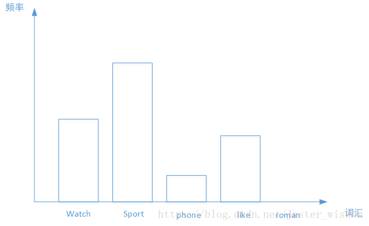

Sklearn-Text character extraction： BoW & TF-IDF
本文的背景是Kaggle题目：Sentiment Analysis on Movie Reviews中使用Sklearn的词袋模型和TF-IDF模型来进行特征工程处理。所以从这两个模型出发来学习下Sklearn这个机器学习著名的工具。
一、Sklearn
首先附上 Sklearn 的中文文档：scikit-learn 0.21.x 中文文档.(这里不推荐使用其他的书，因为已经有了官方文档了，如果硬要看的话有《Sklearn与TensorFlow机器学习实用指南》以及莫烦和其他有关 Sklearn 的视频。)该文档也是ApacheCN 组织翻译的，之前我也看了他们的教程(比如这个学习路线：ApacheCN 人工智能知识树)，总结的还算不错，视频的话只能说一般，不过不管怎么样说他们还是很优秀的。
首先，给出定义：Scikit-learn 是基于 Python 语言的机器学习工具。
- 简单高效的数据挖掘和数据分析工具
- 建立在NumPy，SciPy和 Matplotlib 上
其次，机器学习中的基本算法都可以直接使用Sklearn中的内置函数来进行实现，另外工具内含一些数据，比如鸢尾花数据和房价预测的数据。
最后如何学习 Sklearn呢？正式前文所写，官方文档是最适合的。但是如果觉得没有头绪的话可以有如下几个方法
- 从具体的实战中学习所使用到的算法，使用倒推的形式来学习Sklearn工具（这种方法适用于我现在的学习方式，等到kaggle的实战课程全部结束之后使用方法2）
- 直接看文档，将所有的有关算法进行实现
- 看视频教程或者书进行补充和强化训练，以此加强对sklearn的理解，不管怎么样最重要的还算代码能力。
参考文章：
二、词袋模型
词袋模型最初被用在信息检索领域，对于一篇文档来说，假定不考虑文档内的词的顺序关系和语法，只考虑该文档是否出现过这个词以及所有词的权重。所以词袋模型有很大的局限性，因为它仅仅考虑了词频，没有考虑上下文的关系，因此会丢失一部分文本的语义。
词袋模型首先会进行分词，在分词之后通过统计每个词在文本中出现的次数，我们就得到该文本基于词的特征，如果将各个文本样本的这些词与对应的词频放在一起，就是我们常说的向量化。
词袋模型的三步曲
- 分词 tokenizing
- 统计修订词特征值 counting
- 标准化 normalizing
2.1 词袋模型在各个领域的使用
文本处理领域
假设有5类主题，我们的任务是来了一篇文档，判断它属于哪个主题。在训练集中，我们有若干篇文档，它们的主题类型是已知的。我们从中选出一些文档，每篇文档内有一些词，我们利用这些词来构建词袋。我们的词袋可以是这种形式{‘watch’,’sports’,’phone’,’like’,’roman’,..}
然后每篇文档都可以转化为以各个单词作为横坐标，以单词出现的次数为纵坐标的直方图，如下图所示，之后再进行归一化，将每个词出现的频数作为文档的特征。
图像领域
如果说文档对应一幅图像的话，那么文档内的词就是一个图像块的特征向量，一篇文档有若干个词构成，同样的，一幅图像由若干个图像块构成，而特征向量是图像块的一种表达方式，我们求的N幅图像块中的若干个图像块的特征向量，使用k-means 算法把它们聚成k类，这样我们的词袋里就有k个词，然后来了一幅图像，看它包含哪些词，包含单词A，就把单词A的频数加1。最后归一化，得到这副图像的BoW表示，假如k=4，每幅图像有8个小块（patch），那么结果可能是这样的：[2,0,4,2],归一化之后为[0.25,0,0.5,0.25]语音识别领域
假设一段语音信号有2秒长，我们取每帧长40ms，帧移10ms，就可以得到一小段的语音信号，然后提取每一小段上的音频特征，假设这里使用12维MFCC，那么有多少小段语音信号，就有多少个MFCC特征向量。我们的目标是通过一段语音信号，判断它的情感类别。我们的做法是：取一定数量的MFCC特征向量，将他们聚成k个类，那么这里的词袋李的词就是个类别。对于一段语音信号，我们对其进行分段之后，将各小段分配到这k个类别上，那么每个类别就对应了这一段语音信号里属于该类的段的个数，最后归一化，得到其特征表示。
下文只讨论Bow在词袋模型的处理方法
2.2 Sklearn-BoW 的使用方法
在词袋模型统计词频的时候，可以使用 sklearn 中的 CounntVectorizer 来完成.如果只是为了可以让算法识别文本的话而进行向量化，那么到了X变量这一步就已经完了。后续的测试集和验证集直接调用fit_transform()即可。
1 | from sklearn.feature_extraction.text import CountVectorizer |
官方案例中并没有对 CountVectorizer()的具体参数进行描述，这里附上一篇文章: Sklearn - CountVetorizer详解。
一般要设置的参数是：ngram_range，max_df,min_df,max_features 等，之前的kaggle比赛中我们就使用了：
- analyzer = ‘word’
- max_features = 150000 词库最大词数量
- stop_words = 导入处理后的停用词列表
- ngram_range=(1,4)
这里将如下函数参数作用进行列举：
| 参数表 | 作用 |
|---|---|
| analyzer | 一般使用默认，设置为string类型，如‘word’，‘char’，‘char_wb’，还可以设置为 callable类型 |
| max_features | 默认为None，可设为int，对所有关键词进行降序排序，只取前max_features 个作为关键词集 |
| stop_words | 设置停用词，设为english将使用内置的英语停用词，设为一个list可自定义停用词，设为None不使用停用词，设为None且max_df ∈ [0.7,1.0]将自动根据当前的语料库建立停用词表 |
| ngram_range | 词组切分的长度范围，进行字符串的前后组合，构建出新的词袋标签。参考文章 |
| max_df | 可以设置为范围在[0.0 1.0]的float，也可以设置为没有范围限制的int，默认为1.0。这个参数的作用是作为一个阈值，当构造语料库的关键词集的时候，如果某个词的document frequence大于max_df，这个词不会被当作关键词。如果这个参数是float，则表示词出现的次数与语料库文档数的百分比，如果是int，则表示词出现的次数。如果参数中已经给定了vocabulary，则这个参数无效 |
| min_df | 类似于max_df，不同之处在于如果某个词的document frequence小于min_df，则这个词不会被当作关键词 |
| 属性表 | 作用 |
|---|---|
| vocabulary_ | 词汇表；字典型 |
| get_feature_names() | 所有文本的词汇；列表型 |
| stop_words_ | 返回停用词表 |
| 方法表 | 作用 |
|---|---|
| fit_transform(X) | 拟合模型，并返回文本矩阵 |
| fit() | 对于一个由字符粗构成的数组，每个元素可能是一个以空格分割的句子，使用该函数可以将它们分隔，为每一个单词编码，在这个过程中自动滤除停止词 |
| transform() | 将输入的数组中的每个元素进行分隔，然后使用fit()中生产的编码字典，将原单词转化成编码，数据以csr_matrix的形式返回 |
具体的使用方法可以参考：Kaggle-Sentiment Analysis on Moview Reviews
- 对于方法表最直观的解释就是使用
fit_transform()或fit()函数可以直接得到一个矩阵，这个一般是为做语料库时使用。 - 如果是训练集数据或者验证集数据则需要首先使用
transform()然后再fit() - 自己实现一个 CountVectorizer
三、TF-IDF
有些词在文本中尽管词频高，但是却不重要，这时我们考虑使用TF-IDF技术。
TF-IDF(Teram Frequency-Inverse Document Frequency)是一种用于资讯检索与文本挖掘的常用加权技术。TF-IDF是一种统计方法，用以评估一个字词对于一个文件集或一个语料库中的其中一份文件的重要性。字词的重要性随着它在文件中出现的次数成正比增加，但同时会随着它在语料库中出现的频率成反比下降。TF-IDF加权的各种形式常被搜索引擎应用，作为文件与用户查询之间相关程度的度量或评级。
TF-IDF的主要思想是：如果某个词或短语在一篇文章中出现的频率TF高，并且在其他文章中很少出现，则认为此词或者短语具有很好的类别区分能力，适合用来分类。TF-IDF实际上是：TF * IDF。
（1）词频（Teram Frequency，TF）指的是某一个给定的词语在该文件中出现的频率。即词w在文档d中出现的次数count(w, d)和文档d中总词数size(d)的比值。
1 | tf(w,d) = count(w, d) / size(d) |
这个数字是对词数 (term count) 的归一化，以防止它偏向长的文件。（同一个词语在长文件里可能会比短文件有更高的词数，而不管该词语重要与否。）
（2）逆向文件频率（Inverse Document Frequency，IDF）是一个词语普遍重要性的度量。某一特定词语的IDF，可以由总文件数目除以包含该词语之文件的数目，再将得到的商取对数得到。即文档总数n与词w所出现文件数docs(w, D)比值的对数。
1 | idf = log(n / docs(w, D)) |
TF-IDF根据 tf 和 idf 为每一个文档d和由关键词w[1]…w[k]组成的查询串q计算一个权值，用于表示查询串q与文档d的匹配度：
1 | tf-idf(q, d) = sum { i = 1..k | tf-idf(w[i], d) } = sum { i = 1..k | tf(w[i], d) * idf(w[i]) } |
某一特定文件内的高词语频率，以及该词语在整个文件集合中的低文件频率，可以产生出高权重的TF-IDF。因此，TF-IDF倾向于过滤掉常见的词语，保留重要的词语。
3.1 Sklearn-TF-IDF 的使用方法
1 | from sklearn.feature_extraction.text import TfidfVectorizer |
使用方法与 BoW的类似，这里不再赘述，详情可以参考：Kaggle-Sentiment Analysis on Moview Reviews